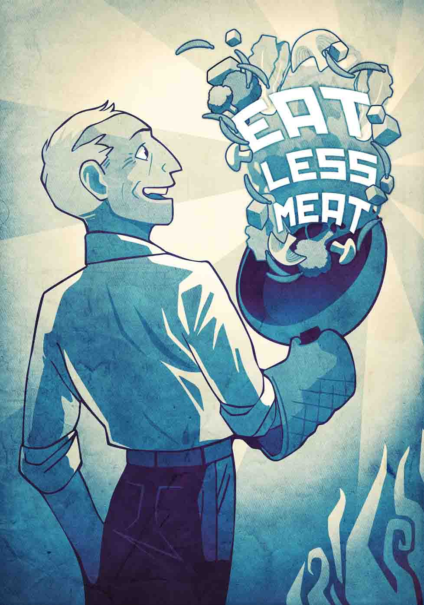

Removing red and processed meat from your diet reduces your risk for cancer, heart disease, type 2 diabetes, hypertension, high cholesterol, obesity, and more.
Raising animals for food accounts for over a third of our fossil fuel consumption and is the leading source of water pollution.
Consuming the residual antibiotics in meat - even organic - lead to drug-resistant “superbugs”. The more we eat it, the more people die from simple and preventable bacterial infections.
You won’t be missing anything. The key nutrients in meat can all be found in a plant-based diet of fruits, vegetables, grains, beans, legumes and nuts.
Pick from a variety of alternatives - tofu, seitan, tempeh, vegetable meat, mushrooms, beans, quinoa, the list goes on!
Start with Meatless Mondays, and work your way toward totally meatless. Whether you are a child, an athlete, pregnant, or lactating. Being vegetarian is just plain healthier.
